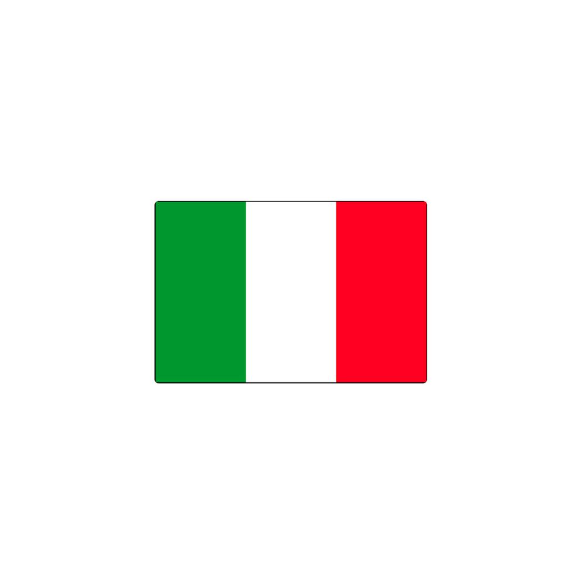

About Me
Hi, I'm Silvia from Italy. My work has taken me to different places, and I've always loved
connecting
with new people
and exploring diverse cultures.
Learning is a big part of who I am, and I'm particularly
fascinated
by
the world of
technology, including coding, cybersecurity, and AI.
Italy
Italy is a country located in Southern Europe, known for its rich history, culture, cuisine and artistic
heritage.
It is
characterized by its boot shape and borders France, Switzerland, Austria and Slovenia. It is bathed by
the Mediterranean
Sea, which includes the Adriatic Sea, the Ionian Sea and the Tyrrhenian Sea.
Its capital is Rome,
rich
in history and
monuments.